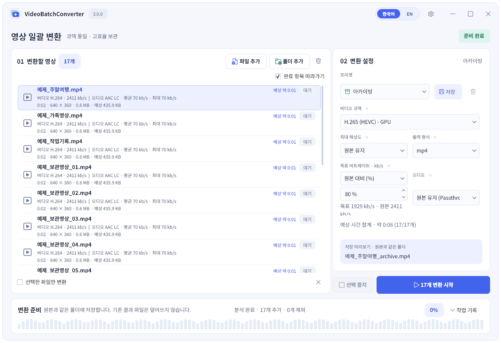

영상은 선명하게,
보관은 가볍게.
서로 다른 코덱, 4K부터 작은 영상까지.
하나의 형식으로 통일하거나, 화질을 우선하며
고효율 코덱으로 보관 용량을 줄이세요.
3.0.0 정식 배포 · 2026-11-17 · Windows 64비트 · 첫 실행 시 FFmpeg 자동 설치
추가하고, 고르고, 한 번에.
코덱·비트레이트·길이를 목록에서 바로 확인하세요.
긴 설정 영역과 하단 진행 표시로 대량 작업을 확인하세요.

실제 프로그램 화면 · FFmpeg으로 생성한 예제 영상 사용
변환할 영상을 모으세요
빈 목록을 클릭해 파일·폴더를 함께 고르거나 끌어 놓으세요. 하위 폴더까지 영상의 코덱·해상도를 분석해 담습니다. Ctrl+O로 파일을 추가할 수도 있습니다.
나에게 맞는 설정을 고르세요
프리셋과 품질을 고르면 목록에 영상별 예상 시간이 표시됩니다. 고급 옵션은 우측 상단 설정 창에서 조정하고, 내 프리셋으로 저장해 다시 쓸 수 있습니다.
결과를 확인하세요
시작 전 샘플로 예상 용량을 확인합니다. 변환 후에는 완료·실패·결과 제외와 크기를 목록에서 확인하고, 완료 항목 따라가기로 최근 결과를 볼 수 있습니다.
세 가지로 정리한 변환 목적.
프리셋을 눌러 설정을 비교해 보세요.
내 설정은 사용자 프리셋으로 저장해 다시 사용할 수 있습니다.
원본 해상도로, 더 가볍게.
H.265 · GPU4K부터 작은 영상까지 원본 해상도와 오디오를 유지합니다. 원본 비디오 비트레이트의 80%를 VBR 목표로 삼고 더 작아진 결과만 HEVC MP4로 보관합니다.
- 최대 해상도
- 원본 유지
- 품질 / 비트레이트
- VBR · 원본 비디오의 80%
- 출력 형식
- MP4
- 오디오
- 원본 복사
- 동시 작업
- 2개
- 저장 위치
- 원본과 같은 폴더
GPU 인코딩에는 해당 코덱을 지원하는 NVIDIA GPU가 필요합니다. 기기·플레이어의 재생 호환성과 원본 오디오 형식을 확인하세요. 출력에는 첫 번째 영상·오디오 트랙을 포함합니다.
시작하기 전에,
이것만 확인하세요.
처음에는 짧은 영상 한 개로 설정을 확인해 보세요. 필요한 만큼 조정한 뒤 나머지 영상을 함께 처리하면 됩니다.
영상을 서버로 업로드하지 않습니다.
업데이트 확인과 FFmpeg 최초 설치에 인터넷을 사용합니다.
어떤 파일을 변환할 수 있나요?
MP4·MKV·AVI·MOV 등 여러 영상의 실제 코덱·해상도·재생 시간을 분석합니다. 기본 출력은 보관용 HEVC와 범용 H.264이며, AV1·VP9 같은 다른 코덱도 사용자 설정에서 선택할 수 있습니다.
NVIDIA GPU가 없어도 사용할 수 있나요?
네. 비디오 코덱에서 CPU 항목을 선택하세요. GPU 항목은 NVIDIA NVENC를 사용하며 AV1 등 각 코덱의 지원 여부는 GPU 세대와 드라이버에 따라 다릅니다. CPU 인코딩은 영상과 설정에 따라 오래 걸릴 수 있습니다.
원본은 어떻게 되고, 결과는 어디에 저장되나요?
원본을 유지하고 같은 폴더에 접미사를 붙인 새 파일로 저장합니다. 예를 들어 여행.mp4는 여행_archive.mp4가 됩니다. 기존 결과 파일이 있으면 덮어쓰지 않고 건너뜁니다.
용량은 얼마나 줄어드나요?
원본과 코덱·품질 설정에 따라 다릅니다. 사전 샘플로 추정하고, 원본 이상 크기의 아카이빙 결과는 제외 이유와 크기를 표시합니다. 저장된 결과가 없으면 별도로 알립니다. 원본은 자동 삭제하지 않으며 손실 압축에서 같은 화질을 보장할 수는 없습니다.
예상 용량이 크면 어떻게 하나요?
첫 주의 파일에서 멈춰 설정 조정·주의 파일 제외·계속 진행을 선택합니다. CQ/CRF는 숫자를 높이고 비트레이트는 낮추면 용량을 줄이는 방향입니다. 추정값과 실제 크기는 다를 수 있으며 사전 확인은 고급 설정에서 끌 수 있습니다.
예상 시간은 어떻게 계산하나요?
파일 추가·인코딩 설정 변경 시 짧은 실제 샘플로 각 영상의 변환 시간을 추정합니다. 합계는 개별 시간을 더한 값이며 동시 작업 수·PC 부하에 따라 실제 완료 시간은 달라집니다.
완료 알림과 종료는 어떻게 동작하나요?
배치가 끝나면 짧은 완료음을 한 번 재생하며 설정 창의 일반에서 끌 수 있습니다. 종료할 때는 간단한 확인창을 표시하고, 진행 중인 작업이 있으면 정리한 뒤 닫습니다.
중지하거나 변환이 실패하면 어떻게 하나요?
정상 중지 시 실행·대기 작업을 취소하고 미완성 결과를 정리합니다. 완료한 결과는 유지합니다. 실패한 파일은 작업 기록이 자동으로 열리므로 GPU·오디오 설정이나 저장 공간을 확인한 뒤 다시 시도하세요.
내 설정을 프리셋으로 저장할 수 있나요?
앱의 프리셋 옆 저장 버튼을 누르고 이름을 입력하세요. 내 프리셋은 재실행 후에도 유지되며 덮어쓰기와 삭제도 할 수 있습니다. 파일 목록이나 폴더 경로는 저장하지 않습니다.
3.0.0은 어떻게 실행하나요?
Windows 64비트 ZIP을 내려받아 폴더 전체를 압축 해제하고 VideoBatchConverter.exe를 실행하세요. EXE와 bin 폴더를 함께 유지하고 첫 실행 시 FFmpeg 자동 설치를 완료하세요. README의 설치·소스 실행 안내를 참고하세요. 정식 배포 파일은 GitHub Releases에서 내려받을 수 있습니다.
소중한 영상에, 더 많은 여유를.
VideoBatchConverter · Windows · MIT License